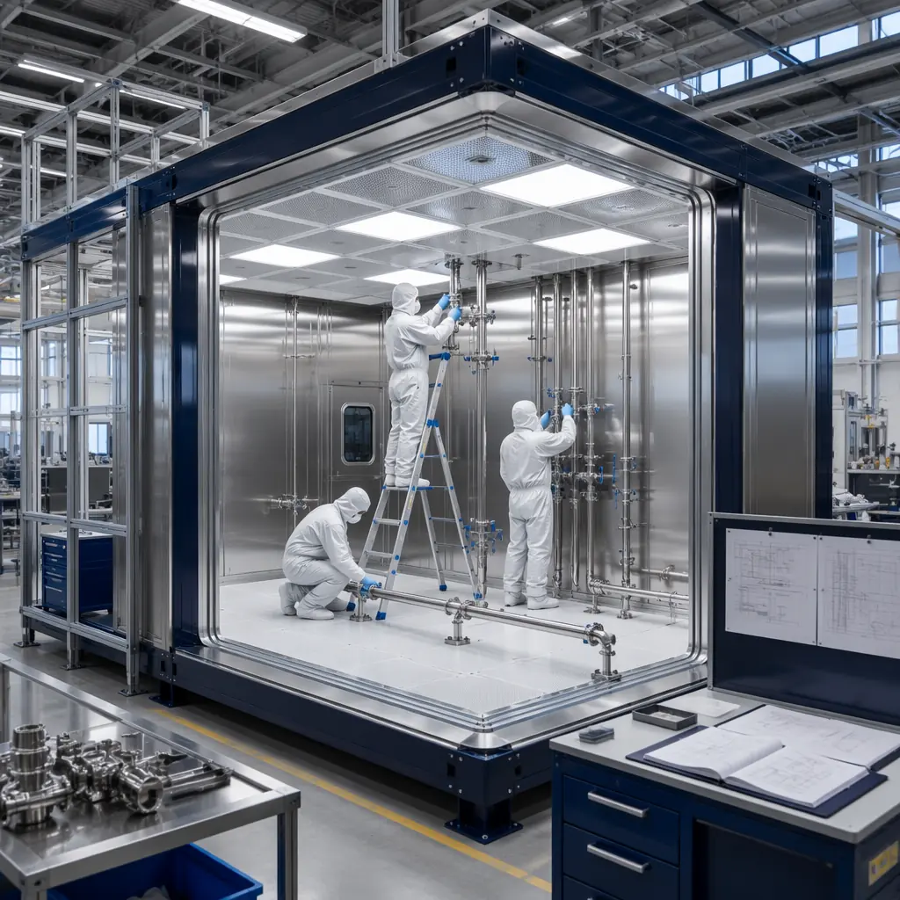
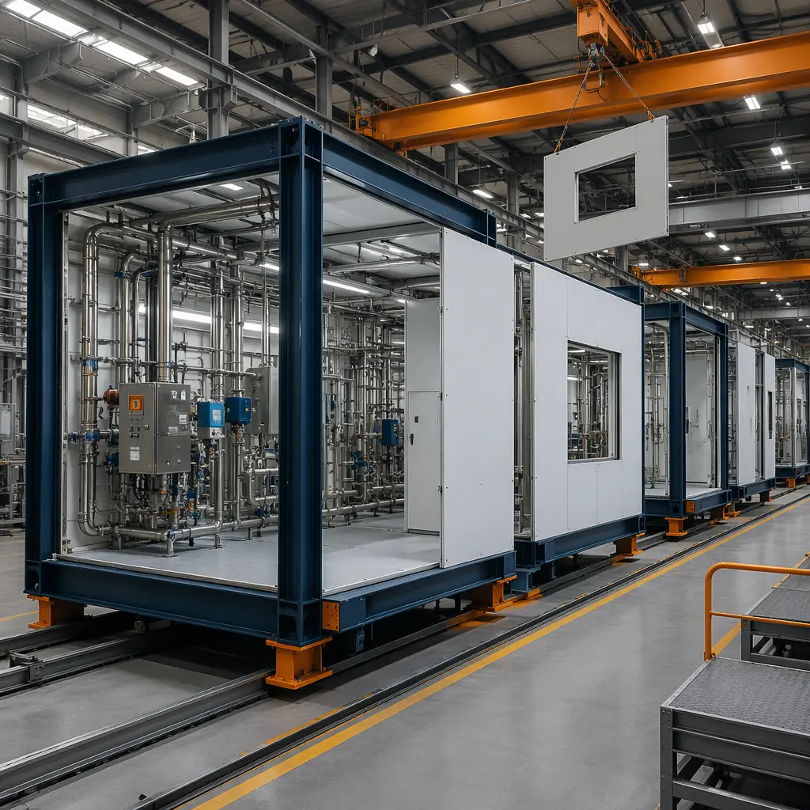
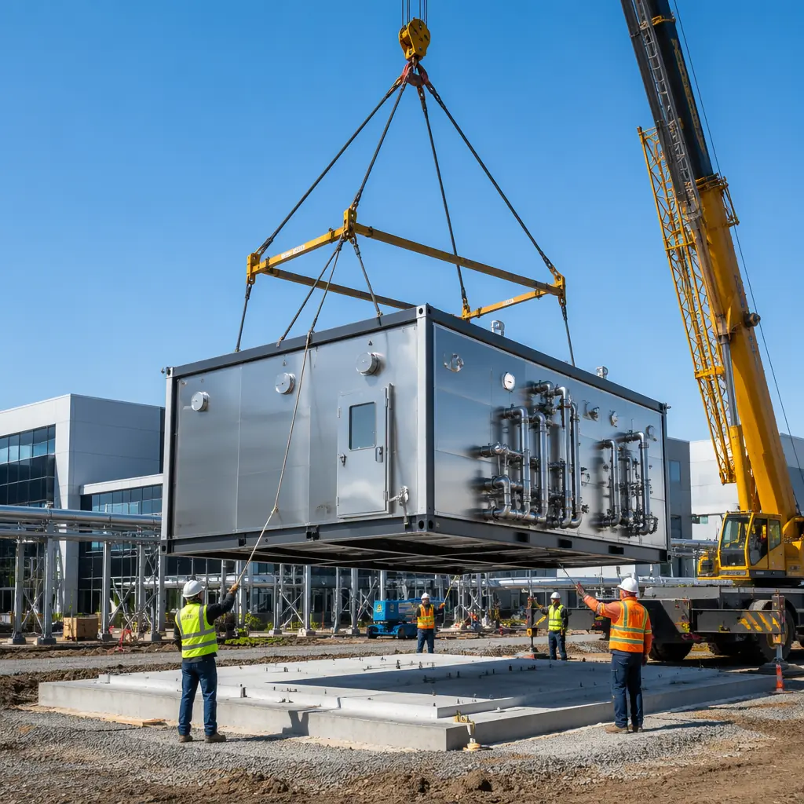

The pharmaceutical construction market faces a paradox: demand for new GMP manufacturing capacity has never been higher, driven by biologics expansion, onshoring of API production, and biosimilar competition — yet conventional construction timelines of 24–36 months for a validated clean room facility are incompatible with drug development cycles that compress every quarter. Modular construction resolves this tension by delivering ISO 5–8 clean room modules, aseptic processing suites, and full GMP manufacturing lines in 12–18 months from contract to qualification. This article explains how prefabricated pharmaceutical facilities achieve regulatory compliance, reduce validation risk, and cut time-to-market for drug manufacturers, CDMOs, and biotech developers.

The GMP Construction Challenge: Why Site-Built Falls Short
Good Manufacturing Practice (GMP) facilities under FDA 21 CFR Part 210/211 and EU GMP Annex 1 impose construction requirements that conventional site-built methods handle poorly. The core issue is not structural — it's contamination control during construction itself:
- Particulate management. Site-built clean rooms generate construction dust throughout the 18–24 month build cycle. Drywall sanding, concrete grinding, and MEP rough-in each introduce particulates that must be exhaustively cleaned before qualification. Even with negative air machines and temporary barriers, construction-phase particle counts in site-built pharma projects routinely exceed ISO 8 limits by 10–100× during active trades, requiring weeks of post-construction cleaning and re-cleaning before viable qualification testing can begin.
- Weld inspection access. Pharmaceutical process piping (WFI, clean steam, process gases) requires 100% orbital weld inspection per ASME BPE-2024. Site-welded piping in crowded mechanical chases creates inspection access problems that factory-welded spools eliminate. Every inaccessible weld becomes a deviation that must be documented, justified, and risk-assessed — a paperwork burden that modular construction avoids.
- Surface finish consistency. Clean room wall and ceiling systems require seamless, non-shedding surfaces with coved corners (minimum 25 mm radius per EU GMP Annex 1 §4.11). Site-applied epoxy coatings and vinyl sheet flooring produce finish variability that factory-applied wall panel systems eliminate. The difference is measurable: factory-finished modular panels achieve Ra ≤ 0.8 μm surface roughness versus 1.6–3.2 μm for field-applied systems, reducing cleaning validation burden by an estimated 30–40%.

Clean Room Classification: Modular ISO 5 Through ISO 8
MODURA's pharmaceutical modules are factory-built to ISO 14644-1 clean room classifications, with the classification achieved at the factory before module shipment — not commissioned on-site after construction. This is the fundamental advantage: the clean room is validated in a controlled factory environment, then transported and reconnected with minimal re-qualification scope.
The factory-build approach delivers specific classification outcomes:
- ISO 5 (Class 100) aseptic filling suites. Achieved through factory-integrated unidirectional airflow (0.45 m/s ± 20%), HEPA H14 terminal filters with gel-seal housings, and fully-welded PVC or stainless steel wall panel systems. The module leaves the factory with ISO 5 certification data from laser particle counters sampling at 28.3 L/min (1 CFM) across all designated monitoring locations.
- ISO 7 (Class 10,000) processing rooms. Standard configuration using turbulent dilution airflow at 30–60 air changes per hour, with factory-installed flush-mount lighting (recessed, gasketed, IP65-rated) and integrated process utility panels for compressed air, nitrogen, and WFI drops. Wall penetrations are pre-engineered and sealed at the factory, eliminating field-drilling through clean room panels.
- ISO 8 (Class 100,000) support zones. Gowning rooms, material airlocks, and equipment wash areas built with the same wall panel system for architectural consistency, with cascading pressure differentials (15 Pa between ISO 7 and ISO 8, 30 Pa between ISO 5 and ISO 7) maintained by factory-balanced HVAC systems.
For research applications with different classification requirements, our modular laboratory and research facilities guide covers BSL-2 and BSL-3 containment approaches. The semiconductor clean room article addresses ISO 3–5 requirements for microelectronics, which use a different airflow strategy (fan-filter-unit ceiling arrays) than pharmaceutical clean rooms.

HVAC and Environmental Control: The Cost Driver
Pharmaceutical HVAC represents 25–35% of total clean room construction cost — the single largest line item. Modular construction reduces HVAC cost through factory integration of ductwork, piping, and controls within the module ceiling void before the module leaves the factory floor. The conventional alternative — installing HVAC above a finished clean room ceiling — requires working in a contaminated overhead space while protecting the clean environment below, a logistical contradiction that adds 15–20% to mechanical contractor costs.
MODURA modules ship with the following HVAC scope factory-complete:
- Air handling units (AHUs). Custom-sized, factory-mounted on the module roof or mezzanine, pre-ducted to terminal HEPA housings. Factory testing verifies airflow uniformity, temperature control (± 0.5°C), and relative humidity control (± 3% RH) before shipment.
- Clean steam and WFI piping. 316L stainless steel, orbitally welded in the factory with 100% borescope inspection. Welder qualifications, weld maps, and material certificates are compiled into a turn-over package that satisfies FDA pre-approval inspection (PAI) documentation requirements.
- Building Management System (BMS). Factory-wired sensors (temperature, humidity, differential pressure, particle count) connected to a local BMS panel with BACnet/IP integration to the site-wide SCADA. Alarm setpoints are configured and tested against a factory acceptance test (FAT) protocol that mirrors the site acceptance test (SAT), reducing commissioning duration from 6–8 weeks to 2–3 weeks.
The MEP integration approach is covered in detail in our MEP systems guide for modular buildings. For developers evaluating total installed cost, our cost per square foot analysis provides pharma-specific benchmarks ($450–$850/sq ft for ISO 7 manufacturing space, depending on process utility density).
Regulatory Validation: How Modular Reduces Risk
FDA pre-approval inspections focus on three questions: Was the facility built as designed? Is it controlled as specified? Can you prove both? Modular construction provides inherently stronger answers to all three because the factory environment generates documentation that site construction cannot match:
- Design qualification (DQ). Factory-built modules use a standardized design platform with pre-qualified materials (wall panel fire ratings, HEPA filter certificates, piping material test reports). The DQ package references proven module designs rather than one-off architectural drawings, reducing DQ review cycles from 4–6 iterations to 1–2.
- Installation qualification (IQ). Factory-fabricated modules generate a complete IQ trail: weld inspection reports, pressure test certificates, surface roughness measurements, HEPA filter integrity test results (DOP/PAO challenge at factory), and material certificates for every product-contact surface. Site-built IQ documentation covers only what was installed in the field; modular IQ covers everything from factory acceptance through site connection.
- Operational qualification (OQ). Because HVAC and BMS systems are factory-tested under FAT conditions that mirror OQ test scripts, the site OQ phase focuses on confirming that reconnected systems perform identically to their FAT baseline. This typically reduces OQ duration by 40–50% compared to fully site-commissioned systems.
For quality management context, our factory QC systems article explains how the MODURA quality program aligns with ISO 9001:2015 and pharmaceutical quality system (PQS) expectations under ICH Q10.

CDMO Capacity: Speed to Revenue
Contract Development and Manufacturing Organizations (CDMOs) operate on a simple economic model: revenue begins when the facility is qualified and the first customer batch is produced. Every month of construction delay is a month of zero revenue on a facility that costs $50–$200 million to build. Modular construction's 40–50% schedule compression translates directly to accelerated revenue recognition:
- Parallel site work and module fabrication. Foundation, utilities, and site infrastructure proceed concurrently with module fabrication in the factory. The critical path shifts from sequential (foundation → structure → envelope → MEP → finishes → CQV) to largely parallel, with the site-critical path limited to foundation and utility tie-ins.
- Expedited CQV. Commissioning, Qualification, and Validation (CQV) can begin on completed modules while remaining modules are still in fabrication. A 12-module pharma facility can have the first 4 modules in IQ/OQ while modules 5–8 are being set and modules 9–12 are still in the factory — a phased CQV approach that site-built facilities cannot replicate.
- Regulatory submission timing. CDMOs targeting ANDA or BLA filings can align modular construction schedules with regulatory submission timelines. A facility that begins module fabrication 8 months before the expected ANDA filing can achieve operational readiness within weeks of FDA approval, rather than waiting 12–18 months post-approval to complete construction.
The financial case for accelerated CDMO deployment is examined in our modular construction ROI guide, which includes pharma-specific NPV models accounting for revenue acceleration, construction financing cost savings, and reduced validation risk.
Future-Proofing: Modular Expandability for Pipeline Changes
Pharmaceutical manufacturing facilities face a unique obsolescence risk: a facility designed for Product A may be unsuitable for Product B if the pipeline shifts. Modular construction addresses this through reconfigurable clean room suites built on a standardized structural grid. When a new product requires a different clean room layout, individual modules can be re-outfitted or replaced without demolishing the entire facility. The module connection points — structural, MEP, and BMS — are standardized, allowing a new module to connect to existing systems with minimal revalidation scope limited to the affected module boundary.
For developers planning long-term pharmaceutical real estate investments, our design flexibility guide covers the modular platform's adaptability across building types and use cases.